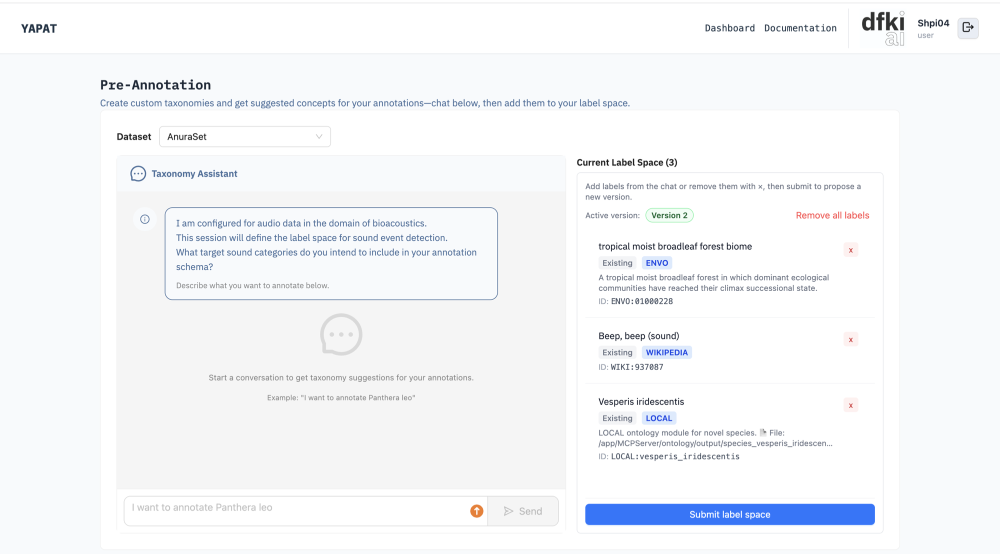
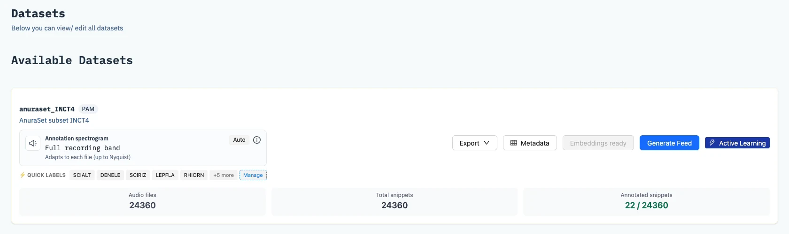

Label Management
Labels are managed at two levels. The label space defines the concepts a team annotates with. Quick labels are the short list of labels annotators select from in the Annotation Hub.
You need: for the label space, the oe_yapat service with an OpenAI API key (see Set up the Taxonomy Assistant). Quick labels need no additional service.
Where labels are managed
| Where | Manages | Applies to | Takes effect |
|---|---|---|---|
| Label Management page Dashboard → Label Management | The label space | The team | When the team owner activates the version |
| Manage on the dataset card Dashboard → Dataset Management | Quick labels | One dataset | On saving |
In the Annotation Hub, annotators choose from both lists, together with the model's species and their own pinned species.
Build a label space
- Open Label Management on the Dashboard. The page is titled Pre-Annotation. Choose the Dataset at the top (administrators also choose the team).
- Describe what you want to label, for example "I want to annotate Panthera leo", and press Enter or Send. Shift+Enter starts a new line.
- Review the suggested concepts and add the ones you want: Add All, or one at a time.
- Refine with more messages, and remove anything you added by mistake.
- Click Submit label space under the list. The list is submitted as a new version for the team owner to approve.

| Panel | Contents |
|---|---|
| Taxonomy Assistant | The chat with the assistant and its suggested concepts. |
| Current Label Space | The list being built. The heading shows the number of concepts, Active version names the version in use, and each concept shows its source (for example ENVO, WIKIPEDIA or LOCAL), a description, and its identifier. |
Activate a label space
A submitted version cannot be edited. The team owner expands it under Label Space Versions and clicks Make active. The active version is the label space the team annotates with. To change it, build and submit a new list; earlier versions are kept. See Submitting a Label Space.
Edit quick labels
- Open Dataset Management on the Dashboard.
- On the dataset card, click Manage at the end of the Quick labels row.
- Choose a source: GBIF for species, ENVO for environmental sounds such as rain or wind, or Local for a free-text label such as "No biophony".
- Search, add or remove labels, and click Save.

Annotators can also add a species to their own quick labels from the GBIF search in the Hub. See Quick labels.
Set up the Taxonomy Assistant
The Taxonomy Assistant is provided by the separate oe_yapat service, which is not part of the YAPAT Compose stack. It runs on the YAPAT host or on any machine the backend can reach, and consists of two servers:
| Server | Port | Role |
|---|---|---|
| Tool server (MCP) | 8001 | Looks up concepts in GBIF, ENVO, and Wikipedia. |
| HTTP API | 8002 | Receives chat messages from the YAPAT backend. |
The language model is OpenAI's. The service therefore requires an OpenAI API key and outbound internet access, even when it runs locally.
- Check out the
feature/yapatIntegrationbranch of oe_yapat. The HTTP API (http_api_server.py) is only on that branch; the copy pinned in the YAPAT repository contains the tool server only. - Create a
.envfile in the oe_yapat folder:OPENAI_API_KEY=sk-... # Optional; default gpt-3.5-turbo-0125 OPENAI_MODEL=gpt-4o-mini - Start both servers with
docker compose up -d, or without Docker with./run_full_service.sh. - Open
http://localhost:8002/healthto confirm that the API is running. - In the backend's
.env, setOE_YAPAT_SERVICE_URLtohttp://host.docker.internal:8002if the backend runs in Docker, or tohttp://localhost:8002otherwise. Restart the backend.
OE_YAPAT_TIMEOUT. If the chat returns an error,
check the OPENAI_API_KEY, that both ports are running, and
that the backend can reach port 8002. See
Troubleshooting.
- The page is at
/pre-annotation; the chat API is under/api/taxonomy/chat. - Each message is forwarded to
POST {OE_YAPAT_SERVICE_URL}/api/generate-taxonomy. See Grounding. - Backend settings:
OE_YAPAT_SERVICE_URL,OE_YAPAT_API_KEY(optional bearer token), andOE_YAPAT_TIMEOUT. See Environment Setup. - Quick labels are read and saved with
GETandPUT /api/datasets/{dataset_id}/quick-labels.